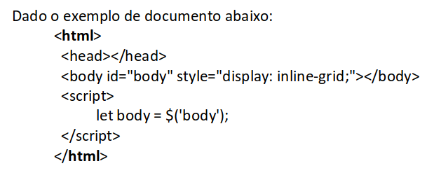
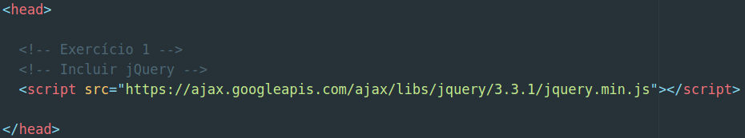
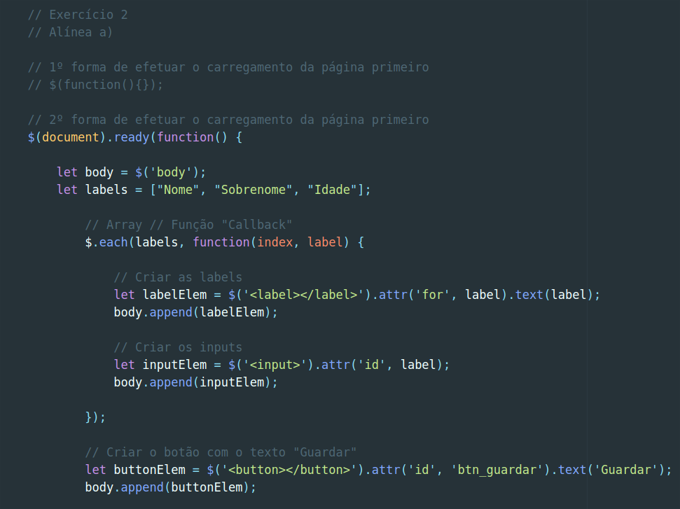
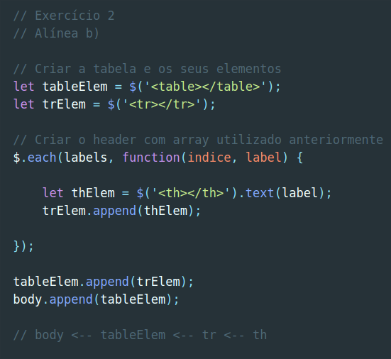
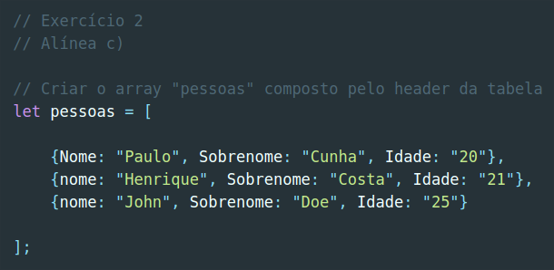
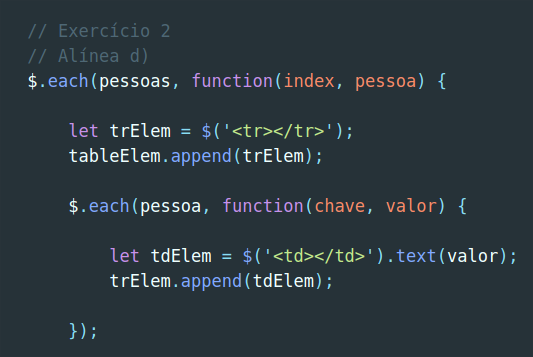
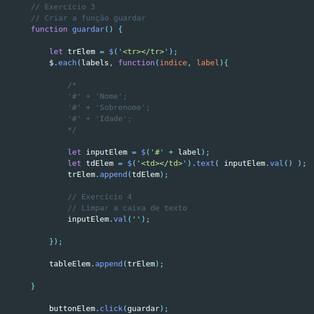
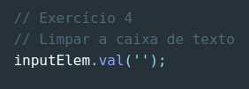
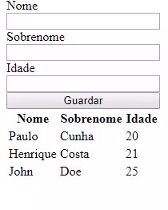

Resolução e análise à ficha de trabalho nº 4
Documento pdf associado: Ficha de trabalho nº 4
A quarta ficha de trabalho realizada teve como principal aliciante o facto de introduzir
a extensão/biblioteca de JavaScript jQuery.
Tratou-se de uma ficha de trabalho idêntica à sua anterior, excepto no facto de
agora o conteúdo programado ser criado utilizado a filosofia jQuery "write less, do more". Foi uma
ficha de trabalho que sem sombra de dúvida me ajudou a ver a magia desta biblioteca em ação e demonstrou-me
particularmente o quão mais fácil é escrever código JavaScript utilizando-a.
Destaques a salientar:
- No início do enunciado foi dado um exemplo de um documento/layout a partir
do qual seriam realizados os exercícios pedidos;
- As alíneas culminavam numa tabela e nela deveriam ser escritos dados
em caixas respetivas, correspondendo estes a labels próprios;
- Por fim, e tal como na ficha de trabalho nº 2 e ficha de trabalho nº 3, procedi ao versionamento
através do GIT;
- Poderia ser consultada a documentação jQuery presente online.
Documento original sugerido no início da ficha de trabalho:

Exercício 1: Inclua a biblioteca jQuery no documento.
Resolução:

- Utilizar o CDN que a API da Google fornece, incluí a biblioteca jQuery no ficheiro
HTML, procedendo assim à resolução do exercício 1.
Exercício 2: Escreva programaticamente, com suporte de jQuery,
um documento HTML que:
- a. Contenha três labels e respetivas caixas de texto para
inserção de nome, sobrenome e idade,
com um botão final com o texto "Guardar":
Resolução:
Primeiramente, fui introduzido a uma boa prática que se deve ter sempre em conta aquando do carregamento
da biblioteca jQuery e das variadas formas em que é possível fazer este processo, falarei disso e da resolução
do exercício propriamente dita em seguida, tendo em conta que o objetivo, tal como no resto da ficha de trabalho,
é exatamente o mesmo da ficha anterior (facto já referido na introdução):

- Como já referi, fui introduzido às boas práticas de carregamento de jQuery, sendo apresentado
à forma menos comum e abreviada de fazê-lo (a que não se encontra commented out) e também
à forma mais comum de praticar a boa prática. Essencialmente, é uma convenção começar a codificar utilizando
a biblioteca carregando a página antes que qualquer código jQuery seja utilizado:
- Ambas as formas/sintaxes de utilização da "boa prática" referida garantem que a página seja carregada
antes de qualquer interação com a mesma, de modo a impedir "conflitos" ou problemas que advêm da tentativa
de interação com elementos que já não se encontram presentes, por exemplo;
- Como se pode notar pela forma mais popular de uso desta boa prática (a segunda que apresento no exercício),
nota-se pelas palavras-chave "document" e "ready" que é garantido que a página já se encontra carregada;
- A partir daí nota-se a definição de uma função e dentro do scope dessa função todo o código jQuery
será posteriormente escrito.
- É, então, criada uma variável chamada body que irá corresponder ao uso do seletor jQuery ($)
sobre o elemento body;
- É também criado um array, tal como na ficha de trabalho anterior, denominado de "labels", que irá conter
as strings "Nome", "Sobrenome" e "Idade";
- É utilizada a versão "for... of..." do jQuery, que se denomina pela sintaxe "$.(each)", iterador
no qual é utilizado o array em questão (labels) e a função callback (esta recebendo
como parâmetros "index" e "label");
- Em seguida são criadas as labels:
- Primeiramente é criada uma variável denominada de "labelElem" e a ela é atribuído um elemento
"label", criado com o auxílio do seletor jQuery e que recebe como atributo, identificado por "attr()":
- O próprio atributo ('for');
- O valor (label).
- Finalmente, é acrescentado o conteúdo do label à variável através do elemento ".text()";
- Sendo posteriormente acrescentado ao body o "labelElem" através do método jQuery "append()".
- Após a criação das labels, são criados os inputs, seguindo praticamente o mesmo processo de criação das labels:
- É criada a variável "inputElem" que recebe como valor o "input" criado que por sua vez receberá como atributo "id"
cada label em questão (valor);
- Em seguinda, ocorre a junção do "inputElem" ao body através do método "append()".
- Finalmente,é criado o "buttonElem" seguindo o mesmo paradigma de criação de elementos jQuery:
- Ao elemento "buttonElem" é atribuído o botão criado com o seletor e também recebe como atributo
o "id" e como valor do atributo "btn_guardar". Por fim, como texto, o botão irá conter a string
"Guardar", que recebe através do método ".text()";
- Ocorre por fim o método append(), que irá juntar o elemento do botão ao body do documento.
- b. Contenha uma tabela com o seguinte header:
- i. "nome", "sobrenome", "idade".
Resolução:
Novamente a facilidade de escrever código JavaScript com recurso ao jQuery veio ao de cima
na criação da tabela.

- Foi, inicialmente, criada a tabela e os seus respetivos elementos:
- Guardando na variável "tableElem" o elemento "table" criando com o auxílio do seletor;
- Atribuíndo à variável "trElem" o "tr" (table row) criado também com o auxílio do seletor jQuery.
- Foi, em seguida, criado o header com o array usado anteriormente:
- Utilizando o iterador de arrays jQuery "$(each)" que afetava tanto o array "labels",
como também uma função que continha o "índice" e o elemento "label" como seus argumentos.
- Dentro do iterador foi criado um elemento denominado de "thElem", criado com auxílio do seletor
e que possui como texto a string contida em cada label.
- No final da resolução da alínea foi utilizado o método jQuery "append()" tanto para proceder à
junção do "trElem" ao "tableElem" como para a junção do "tableElem" ao "body".
Nota: Foi destacado que seria necessário compreender a lógica
das tabelas HTML para proceder à realização deste tipo de exercício, daí o pequeno
comentário que se encontra abaixo do exercício resolvido.
- c. Crie um array "pessoas" composto por objetos pares
chave-valor do header da tabela:
Resolução:
Destaque para o facto da resolução deste exercício ser idêntica à da ficha anterior,
o que torna-se óbvio devido ao facto da definição de um objeto ser comum tanto em JavaScript
como utilizando a biblioteca jQuery.

- Em primeiro lugar, foi criada uma variável denominada de "pessoas";
- De seguida, utilizando os parêntesis retos e dentro dentro deles as "chavetas",
foram criados os objetos pares chave-valor, sendo que criei três diferentes objectos,
separados por vírgula.
- d. Preencha a tabela com os valores do array "pessoas":
Resolução:
A ficha de trabalho chegou então à fase em que seria necessário preencher a tabela com os valores
que se encontravam dentro do array "pessoas", utilizando jQuery.

- Utilizando inicialmente o iterador de arrays (na sua versão jQuery), passando-o como argumentos
o array "pessoas" e uma função que recebia como parâmetros o "index" e o objeto "pessoa". Foi definido que:
- Em cada iteração seria criado um elemento denominado de "trElem" e este receberia como valor um "tr" (table row), criado com
o seletor jQuery;
- Esse elemento "trElem" seria "juntado" ao "body" através do método "append()";
- Ainda dentro do scope do iterador jQuery seria utilizado outro iterador que receberia
desta feita o objeto "pessoa" e uma função que recebia como argumentos a "chave" e o "valor" associados ao objeto;
- Dentro desse segundo iterador jQuery seria criado um "td" (table data) que iria ser colocado numa variável "tdElem"
e receberia como texto respetivo a string que correspondesse à variável "valor";
- Por fim, o "tdElem" criado seria adicionado ao "trElem".
Exercício 3: Altere o documento HTML do exercício 1 para que
a inserção de dados na tabela ocorra aquando do clique no botão "Guardar":
Resolução:
Tal como na ficha de trabalho nº 3, foi criada uma função que guardaria posteriormente
os dados preenchidos na tabela aquando do clique, desta feita utilizando jQuery.

- Primeiramente foi utilizada a sintaxe que permite definir uma função e escrever código
no corpo da mesma. Sendo esta criada com as palavras "function guardar() {}", sendo esta parte
do exercício igual à da ficha de trabalho da introdução ao Vanilla JavaScript.
- Foi criado também um objeto "pessoa", encontrando-se este inicialmente vazio;
- Seguidamente, foi criada uma variável denominada de "inputElem", à qual viria a ser
atribuído o valor conseguido através do seletor jQuery: um símbolo de cardinal ("#") mais o
valor presente em "label";
- Foi também criado um elemento "td" (table data), o que viria a ser concretizado
através do método ".val()", utilizado na variável "inputElem";
- Por fim, o elemento "tdElem" foi adicionado ao "trElem", utilizando o método jQuery
"append()";
- Após a iterador em questão, é de notar que o "trElem" foi por sua vez adicionado
ao elemento da tabela;
- De resto, e de modo a finalizar o exercício, a função "guardar()" foi chamada
aquando do clique no botão, utilizando um "addEventListener" na sua versão jQuery,
chamando a função após o evento de "click" no "buttonElem".
Exercício 4: Altere o programa para limpar as caixas de texto
após o clique no botão:
Resolução:
Novamente, tal como na ficha de trabalho anterior, foi pedido que a função
"guardar()" fosse extendida com um extra, pelo que as caixas de texto seriam
esvaziadas após um clique no botão.

Utilizando o método "val()", tornou-se possível aceder ao valor contido
no "inputElem" e definir o mesmo como uma string.
Resultado final da ficha de trabalho em questão:

Considerações finais: Tratando-se esta ficha de trabalho
basicamente de uma repetição da sua anterior, pelo menos em termos dos exercícios propostos,
foi possível comparar a versão Vanilla da linguagem (presente na anterior ficha),
com a versão jQuery (presente nesta ficha). O facto é que foram confirmadas as expetativas
óbvias de que a utilização da biblioteca jQuery torna a programação em JavaScript totalmente
mais facilitada e produtiva, sem qualquer sombra de dúvida. Salvaguardando qualquer depedência
desta extensão, pois é simplesmente fulcral entender em primeiro lugar a forma primitiva
de escrever código na linguagem pois, sem o fazer, torna-se impossível entender realmente o JavaScript.
Voltando, de resto, ao mundo "mágico" da biblioteca jQuery, esta ficha de trabalho trouxe-me
inúmeros benefícios quanto à compreensão da jQuery e garantiu-me com toda a certeza
que irei utilizar a mesma possivelmente em todos os meus futuros projetos, até porque utilizo constantemente
a framework Bootstrap e esta traz jQuery no seu "pacote" de vantagens. Rápida, eficaz e flexível,
são os três adjetivos que possuo para caracterizar jQuery após a resolução dos exercícios descritos
acima.